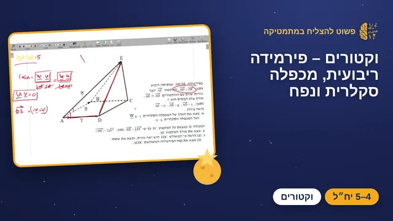
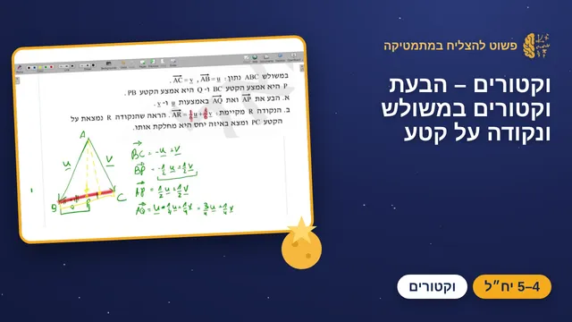
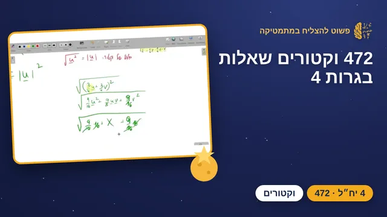
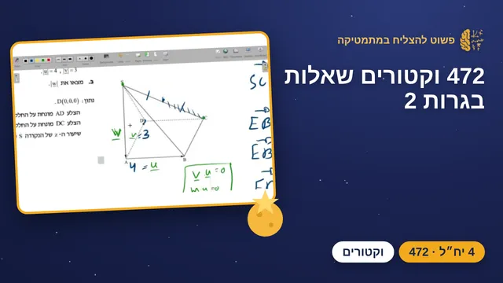
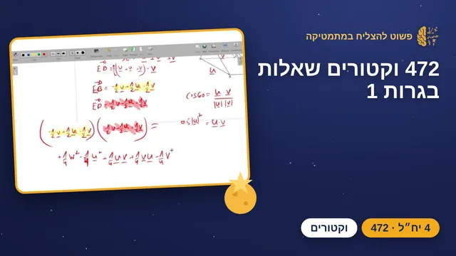

פשוט להצליח במתמטיקה › כל הנושאים › וקטורים
וקטורים – סרטוני הסבר ותרגול
9 סרטוני הסבר ותרגול בנושא וקטורים – לשאלון 472, שאלון 572. כל נושא מוסבר מהקל אל הקשה: קודם הרעיון, אחר כך תרגילים, ובסוף שאלות בסגנון בגרות. הכול בחינם, בשיטת "פשוט להצליח".
רוצים לעקוב אחרי ההתקדמות?נרשמים בחינם, וכל סרטון שראיתם מסומן ✓. ממשיכים מכל מכשיר.
הצטרפות בחינם ←וקטורים – שאלון 472 כל הנושאים של שאלון 472 ←
 וקטורים במרחב – תיבה, מכפלה סקלרית וזווית בין וקטורים
וקטורים במרחב – תיבה, מכפלה סקלרית וזווית בין וקטורים
וקטורים – פירמידה ריבועית, מכפלה סקלרית ונפח
וקטורים – הבעת וקטורים במשולש ונקודה על קטע
472 וקטורים שאלות בגרות 4 472 וקטורים שאלות בגרות 3
472 וקטורים שאלות בגרות 3
472 וקטורים שאלות בגרות 2
472 וקטורים שאלות בגרות 1 482 שאלת בגרות מדהימה וקטורים
482 שאלת בגרות מדהימה וקטורים וקטורים 472 שאלת בגרות טובה ויפה 4 יח כיתה יב
וקטורים 472 שאלת בגרות טובה ויפה 4 יח כיתה יב